The original question bank
Exam questions
English questions from past papers, the professor’s sample list and course quizzes. Select a question to read the full prompt and its source.
No questions match these filters. Try another topic or reset the filters.
Exam 23 July 2026 · Python exercisePython & Pandas · 23 July 2026
Question 3 [11 points]
Consider the following fragment of Python code:
fruits = ["apple", "banana", "apple", "cherry", "banana"] counts = {} for f in fruits: if f in counts: counts[f] += 1 else: counts[f] = 1Modify the code so that the information about the fruit positions (indices) are also stored.
After executing this Python code:
import pandas as pd data = { "employee": ["Anna", "Marco", "Anna", "Luca", "Marco"], "hours": [40, 35, 42, 38, 30], "dept": ["Sales", "IT", "Sales", "IT", "Sales"] } df = pd.DataFrame(data) def compute_bonus(h): if h > 40: return h * 2 else: return h * 1.5 df["bonus"] = df["hours"].apply(compute_bonus) summary = df.groupby("dept").bonus.sum()What is the content of the variable summary?
Consider the following code:
import pandas as pd enrollments = pd.DataFrame({ 'student': ['Anna', 'Marco', 'Anna', 'Luca', 'Marco'], 'course': ['Math', 'Physics', 'Physics', 'Math', 'Chemistry'] }) teachers = pd.DataFrame({ 'course': ['Math', 'Physics', 'Biology'], 'teacher': ['Dr. Scott', 'Dr. Schrute', 'Dr. Halpert'] }) join_type = … merged = enrollments.merge(teachers, on='course', how=join_type)The join type has not been defined. Which types of join would make Dr. Halpert appear in the merged results?
Exam 23 July 2026 · Question 1 [11 points]Databases and data warehouses
Exam 23 July 2026 · Question 2 [11 points]Agile in uncertain and complex environments
Exam 23 June 2026 · Python exercisePython & Pandas · 23 June 2026
Question 3 [11 points]
Consider the following fragment of Python code:
Consider the following fragments of Python code:
import pandas as pd
records = [('Alice', 320), ('Bob', 85), ('Alice', 410), ('Carol', 150), ('Bob', 230)]
orders = pd.DataFrame(records, columns=['name', 'amount'])
info = pd.DataFrame({
'name': ['Alice', 'Bob', 'David'],
'city': ['Rome', 'Milan', 'Naples'],
})
merged = orders.merge(info, on='name', how='left')
Questions:
- Add a new column to orders containing the values in column ‘amount’ minus the mean of ‘amount’.
- What is the value of the attribute ‘city’ for any record corresponding to Carol in merged, and why?
- Calculate the total amount per ‘city’.
Exam 23 June 2026 · Question 1 [11 points]Data quality assessment and improvement
Exam 23 June 2026 · Question 2 [11 points]Designing data warehouse dimensions
Exam 10 February 2026 · Python exercisePython & Pandas · 10 February 2026
Question 3 [11 points]
Consider the following fragment of Python code:
items = ["pen", "book", "notebook", "eraser"]
prices = [2, 10, 5, 1]
data = []
for i in range(len(items)):
data.append((items[i], prices[i]))
def adjust_price(p):
if p > 5:
return p - 1
else:
return p + 1
adjusted = []
for item, price in data:
adjusted.append(adjust_price(price))
Questions:
- What is the content of the adjusted variable after running all the code?
- Store the content of adjusted in a dictionary.
- Using Pandas, calculate the percentage change between the original price and the adjusted price.
Exam 10 February 2026 · Question 1 [11 points]Agile methodologies and Scrum roles
Exam 10 February 2026 · Question 2 [11 points]Insurance claims: data quality problems
Original table or code
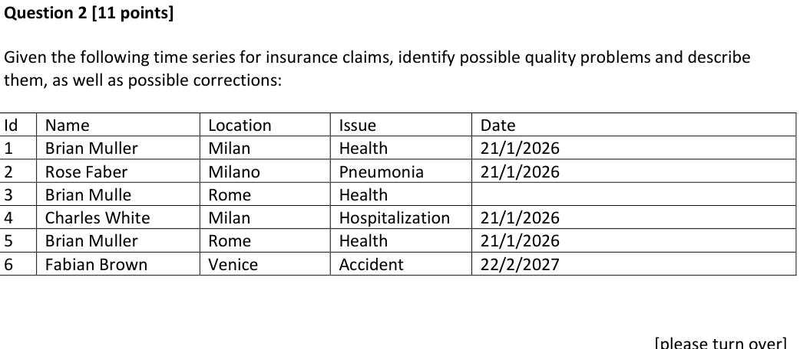
Exam 26 January 2026 · Question 1 [11 points]Agile benefits and uncertainty
Exam 26 January 2026 · Question 2 [11 points]Object localization techniques
Exam 26 January 2026 — B · Question 1 [11 points]Digital signature creation and applications
Exam 26 January 2026 — B · Question 2 [11 points]Data quality dimensions
Exam 26 January 2026 — Version A · Python exercisePython & Pandas · 26 January 2026 — Version A
Question 3 [11 points]
Consider the following fragment of Python code:
import pandas as pd
data = {
"name": ["Mr. White", "Mr. Blonde", "Mr. White", "Mr. Pink", "Mr. Blonde"],
"hours": [5, 8, 3, 8, 6]
}
df = pd.DataFrame(data)
def compute_pay(h):
if h >= 8:
return h * 15
else:
return h * 10
df["pay"] = df["hours"].apply(compute_pay)
expenses = df.pay.sum()
Questions:
- What is the content of the expenses variable after running all the code?
- Modify the compute_pay function so that only the portion of hours strictly over 8 are paid at 15 per hour, while keeping the rest of the logic unchanged.
- Compute the pay per person.
Exam 26 January 2026 — Version B · Python exercisePython & Pandas · 26 January 2026 — Version B
Question 3 [11 points]
Consider the following fragment of Python code:
cities = ["Rome", "Paris", "Rome", "Berlin", "Paris"]
temps = [20, 18, 22, 16, 19]
pairs = []
for i in range(len(cities)):
pairs.append((cities[i], temps[i]))
def datafilter(data, limit):
result = []
for city, temp in data:
if temp >= limit:
result.append((city, temp))
return result
filtered = datafilter(pairs, 19)
Questions:
- What is the content of the variable filtered after running all the code?
- Rewrite the function datafilter so that it returns a dictionary.
- Using a Pandas DataFrame, compute the average temperature and subtract it from all the records.
Exam 03 September 2025 · Question 1 [11 points]Discuss data quality problems in time series, giving examples and explaining the challenges posed by each prob
Exam 03 September 2025 · Question 2 [11 points]Illustrate the value of data/information according to the Moody’s laws studied in the class.
Exam 03 September 2025 · Question 3 [11 points]Consider the following fragment of Python code: import pandas as pd names = ["Einstein", "Turing", "Lovelace",
Original table or code
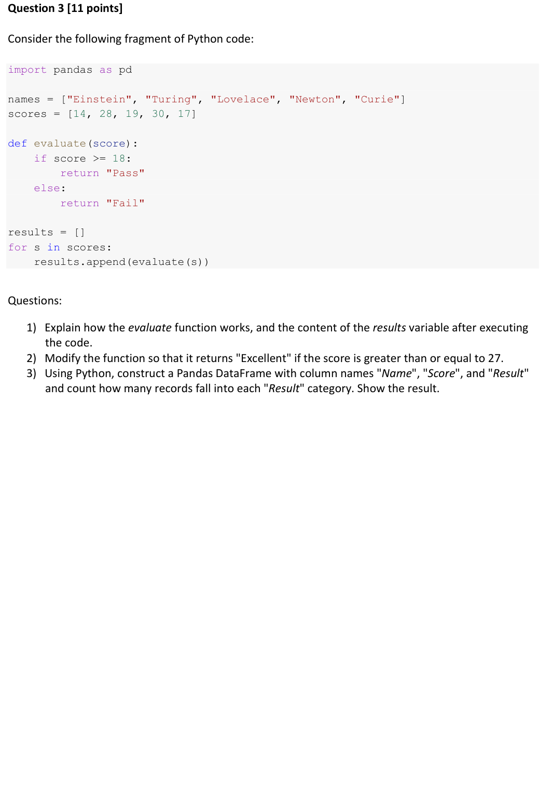
Exam 6 February 2025 · Python exercisePython & Pandas · 6 February 2025
Question 3 [11 points]
Consider the following fragment of Python code:
import pandas as pd
diz1 = {'student_id': [1, 2, 3, 4], 'age': [20, 23, 21, 22], 'exam': ['A', 'B', 'A',
'B']}
diz2 = {'enroll': [2024, 2025, 2024, 2025], 'student_id': [1, 2, 3, 4]}
price = {'grade': [10, 20, 40, 60]}
df1 = pd.DataFrame(diz1)
df2 = pd.DataFrame(diz2)
df_price = pd.DataFrame(price)
df3 = pd.concat([df2, df_price], axis=1)
df4 = df1.merge(df3, on='student_id')
print(df4) # Which is the output?
for var, obj in df4.groupby(['exam', 'enroll']):
print(sum(obj['grade']) / len(obj['grade']))
# 1. Explain step by step the workflow of this piece of python code, writing down when requested the output dataframe (see comments on the code)
# 2. Explain the difference between the concat and the merge function in pandas
# 3. Explain the difference between a for and a while loop.
Exam 6 February 2025 · Question 1 [11 points]Agile and traditional project management
Exam 6 February 2025 · Question 2 [11 points]Dimensional Fact Model and ROLAP
Exam 15 January 2025 · Python exercisePython & Pandas · 15 January 2025
Question 3 [11 points]
Consider the following fragment of Python code:
import pandas as pd
def my_function(val=10):
if val % 2 == 0:
return val * 2
else:
return val * 3
data = {'id': [i for i in range(4)], 'value': [2, 3, 4, 5]}
df = pd.DataFrame(data)
df['sq'] = df['value'] ** 2
df['db'] = df['value'].apply(my_function)
print(df) # Write down the content of the dataframe at this point
res_df = df[(df['sq'] > 15) & (df['db'] < 10)]
print(res_df) # Write down the content of the dataframe at this point
a) Explain step by step the workflow of this piece of python code, writing down when requested the output dataframe (see comments on the code)
b) Implement a function that takes a list of integers and returns a new list where each integer is replaced by the square of its value if it is even, and by the cube of its value if it is odd.
c) Which and why is the best combination of basic Python data structure to store the movies in which an actor has participated?
Exam 15 January 2025 · Question 1 [11 points]Data quality dimensions and profiling
Exam 15 January 2025 · Question 2 [11 points]Asymmetric cryptography
Exam 27 August 2024 · Python exercisePython & Pandas · 27 August 2024
Question 3 [11 points]
Consider the following fragment of Python code:
import pandas as pd
ll = [1, 2, 3, 4, 5]
mm = ['a', 'bb', 'ccc', 'dddd', 'eeeee']
rr = []
for ii in range(0, len(ll) + 1):
dd = {'letter': mm[ii], 'index': ll[kk]}
rr.append(dd)
def my_fun(aaa='abcd'):
return len(aaa)
df = pd.DataFrame(rr) # Write down which is the content of this dataframe at this point
df['count'] = df['letter'].apply(my_fun)
ff = [0 if i % 2 == 0 else 1 for i in df['index']]
df['mask'] = ff
df['sum'] = df['index'] + df['count'] + df['mask']
print(df) # Write down which is the content of this dataframe at this point
In the code there are two errors. Find them, correct them explaining why they are errors.
Explain step by step the workflow of this piece of Python code, writing down when requested the content of the dataframe (see comments on the code)
Which is the difference between a merge and a concat operation in pandas?
Exam 27 August 2024 · Question 1 [11 points]Illustrate the RFIDs technology and discuss how it can be used for object localization.
Exam 27 August 2024 · Question 2 [11 points]Illustrate the relationship among ethical, social, political issues in an information society and the five mor
Exam 09 July 2024 · Question 1 [11 points]Provide a synthetic general description of databases, data warehouses and data lakes and compare them in terms
Exam 09 July 2024 · Question 2 [11 points]Illustrate the security properties and describe for each property if and how asymmetric cryptography can contr
Exam 9 July 2024 · Python exercisePython & Pandas · 9 July 2024
Question 3 [11 points]
Consider the following fragment of Python code:
import random as run
import pandas
def my_function(val=10):
if not val:
return run.randint(100, 500)
else:
return val
data = {"state": ["Ohio", "Ohio", "Ohio", "Nevada", "Nevada", "Nevada"],
"year": [2000, 2001, 2002, 2001, 2002, 2003],
"population": [1.5, 1.7, 1.9, 2.4, 2.9, 3.2],
"debt": [100, False, 300, 75, False, 50]}
df = pandas.DataFrame(data)
df['new_debt'] = df['debt'].apply(my_function)
df.groupby("year").debt.sum() # Write down which is the output of this line
# 1. Qualitatively explain what the program does and describe the expected output.
# 2. Implement a filter (selection) for the "df" dataframe. The resulting dataframe has to contain only the rows with "new_debt" over 250.
# 3. Explain the difference between a continue and break statement
Exam 17 June 2024 · Python exercisePython & Pandas · 17 June 2024
Question 3 [11 points]
Consider the following fragment of Python code:
import pandas as pd
diz1 = {'house_id': [1, 2, 3, 4], 'rooms': [2, 3, 1, 2], 'street_name': ['A', 'A', 'B', 'B']}
diz2 = {'zip_code': [2020, 2021, 2020, 2020], 'house_id': [1, 2, 3, 4], 'price': []}
diz2['price'] = [10 * (i+1) if i % 2 == 0 else 50 for i in range(len(diz2['zip_code'])) ]
df1 = pd.DataFrame(diz1)
df2 = pd.DataFrame(diz2)
df3 = df1.merge(df2, on='house_id')
for var, obj in df3.groupby(['zip_code', 'rooms']):
print(obj['price'].max()) # Change this line
Questions:
Qualitatively explain what the program does and describe the expected output.
Change the last line of the code, without using the mean function of pandas, such that it computes the average price.
Explain the difference between a set, a list, and a tuple.
Exam 17 June 2024 · Question 1 [11 points]Assume you have a database table with the following schema: Visit(RecordID, PersonID, Name, Institution, Town,
Exam 17 June 2024 · Question 2 [11 points]Explain how continuous delivery of value is implemented in agile project management. Compare the advantages an
Exam 02 February 2024 · Question 1 )Given the following table derived from the integration of different sources, identify data quality issues pres
Original table or code
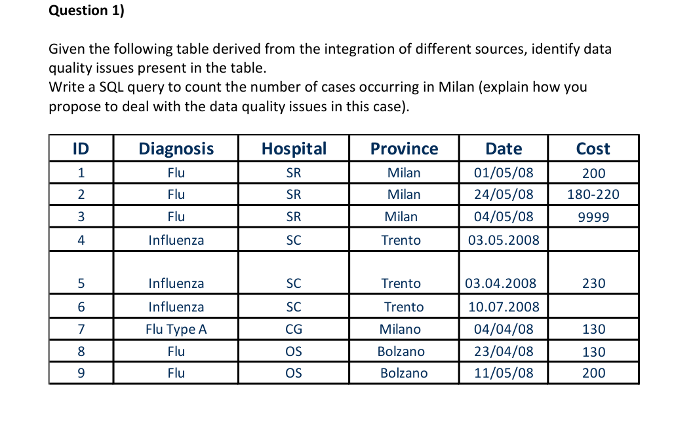
Exam 02 February 2024 · Question 2 )Explain the role of the scrum master in agile project management and discuss how the scrum master’s responsibi
Exam 2 February 2024 · Python exercisePython & Pandas · 2 February 2024
Question 3)
Consider the following fragment of Python code:
list_of_lists = [[0, 1, 1, 0], [1, 1], [0, 0, 1]]
def my_special_function(input):
output = []
for el in input:
output.append(sum(el))
return output
o = my_special_function(list_of_lists)
import pandas as pd
df = pd.DataFrame({'sums': o})
df['ssums'] = df['sums'] * df['sums'] + 1
Questions:
What does my_special_function do?
Modify my_special_function so that it prints out the total sum of all the elements in list_of_lists
Describe the output of df at the end of the execution
Exam 16 January 2024 · Python exercisePython & Pandas · 16 January 2024
Question 3 [11 points]
Consider the following fragment of Python code:
list_of_tuples = [(1, 2), (1, 2, 3, 10), (7, 8, 9)]
def my_function(input):
output = []
for el in input:
output.append(len(el))
return output
o = my_function(list_of_tuples)
import pandas as pd
num_elements = len(list_of_tuples)
ids = list(range(0, num_elements))
df = pd.DataFrame({'id': ids, 'n': o})
Questions:
What is the content of df at the end of the execution?
Modify my_function to return the sums of the values, one sum for each tuple of the input
Add a new column to df named “3n” containing the values in column n multiplied by 3.
Exam 16 January 2024 · Question 1 [11 points]Illustrate briefly the technological approaches illustrated in the course that can be used to identify objects
Exam 16 January 2024 · Question 2 [11 points]Describe the data quality dimensions described in the course and given an example of data quality problem for
Exam 17 July 2023 · Python exercisePython & Pandas · 17 July 2023
- Given the following Python data structure, containing stock identifiers and price data:
stock_prices = [('OBE', 6.18), ('EQX', 4.72), ('OBE', 6.16), ('MXC', 12.28), ('MXC', 12.19)]
Implement in Python:
a. The count of unique identifiers
b. The average of prices
- Having converted the data structure of question 1 to a Pandas DataFrame:
df = pd.DataFrame(stock_prices, columns = ['stock_id', 'price'])
Extract the maximum price per stock.
Exam 17 July 2023 · Question 1 [11 points]Briefly illustrate and then compare the following technologies: Database Managements Systems, Datawarehouses,
Exam 17 July 2023 · Question 2 [11 points]Explain the role of the product owner in agile project management, and discuss how the product owner's respons
Exam 27 June 2023 · Python exercisePython & Pandas · 27 June 2023
Consider the following fragment of Python code:
import pandas as pd
column_names = ["col1", "col2", "col3"]
values = [("a", 0, 1),
("a", 1, 1),
("b", 0, 0)]
d = pd.DataFrame(values, columns=column_names)
def mysterious_function(val):
if val == 0: return val * 7 + 1
return val * 2
d["col4"] = d["col3"].apply(mysterious_function)
d.groupby("col1").col4.sum()
Qualitatively explain what the program does and describe the expected output.
Implement an alternative mysterious_function that returns a list of all the integers from 0 to val included.
Choose a pure Python data structure to store the output of the code execution, and motivate your choice
Exam 27 June 2023 · Question 1 [11 points]Illustrate briefly the technological approaches illustrated in the course that can be used to track the locati
Exam 27 June 2023 · Question 2 [11 points]Explain the main benefits related to Agile methodologies focusing on how uncertainty is managed compared with
Exam 15 February 2023 · Python exercisePython & Pandas · 15 February 2023
Consider the following fragment of Python code:
a = {'A': [1, 2, 3], 'B': [4, 5, 6], 'C': [7, 8, 9]}
b = {'B': [4, 3, 7], 'C': [4, 3, 1], 'D': [2, 6, 9]}
tmp = {}
s1 = set(a.keys())
s2 = set(b.keys())
for k in s1.union(s2):
if k in a and k in b:
tmp[k] = a[k] + b[k]
elif k in a:
tmp[k] = a[k]
else:
tmp[k] = b[k]
Then please answer the following questions:
# 1. Provide a qualitative description step by step, in simple terms, of the program workflow.
# 2. Implement a function that given a list and a value count how many times the value is in the list.
# 3. Which are the characteristics and differences of a tuple and a list?
Exam 15 February 2023 · Question 1 [11 points]Illustrate the meaning of SDG goals, targets and indicators.
Exam 25 January 2023 · Python exercisePython & Pandas · 25 January 2023
Consider the following fragment of Python code:
import random
import statistics as stat
my_list = [1, 'a', 3, 2]
my_diz = {key: [random.randint(0, 10) for _ in range(10)] for key in my_list}
tmp = {}
def my_fun(ll, delta=1):
return stat.mean(ll) + delta
for a in my_diz:
tmp[a] = sum(my_diz[a])
my_diz[a] = my_fun(my_diz[a])
Then please answer the following questions:
- Provide a qualitative description step by step, in simple terms, of the program workflow.
- Implement a function that given a list return a boolean according whether there is at least a list item whose type is a float.
- Which and why is the best combination of basic python data structure to store the grades of the students identified by a unique ID?
Exam 25 January 2023 · Question 1 [11 points]Illustrate the process of extracting data for a datawarehouse and how to define analysis dimensions.
Exam 25 January 2023 · Question 2 [11 points]Discuss Moody’s laws examined during the course.
Exam September 2022 · Python exercisePython & Pandas · September 2022
import random
import pandas as pan
my_list = [1, 'a', 3, 2]
my_diz = {key: [random.randint(0, 10) for _ in range(10)] for key in my_list}
df = pan.DataFrame(my_diz)
df = df[df[1] + df[2] - df['a'] > df[3]]
tmp = set([])
for index, row in df.iterrows():
tmp.add(row[1])
print(sum(tmp))
# 1. Provide a qualitative description step by step, in simple terms, of the program workflow.
# 2. Implement a function that given a value and a list return a boolean according whether the value is in the list or not.
# 3. List the rules to define a variable name.
Exam 11 July 2022 · Python exercisePython & Pandas · 11 July 2022
Consider the following fragment of Python code:
import pandas
from statistics import mean
a = {'A': [1, 2, 3], 'B': [4, 5, 6], 'C': [7, 8, 9]}
b = {'B': [4, 3, 7], 'C': [4, 3, 1], 'A': [2, 6, 9]}
def my_function(A, B):
tmp = {}
s1 = set(A.keys())
s2 = set(B.keys())
for k in s1.union(s2):
if k in B and k in A:
tmp[k] = A[k] + B[k]
elif k in A:
tmp[k] = A[k]
else:
tmp[k] = B[k]
return tmp
DF_ = pandas.DataFrame(my_function(a, b))
tmp = ()
for c in df.columns:
tmp.append(mean(df[c]))
print(tmp)
Then please answer the following questions:
# 1. In the code there are two errors. Identify them, explain why they are an error and provide a simple solution without changing the program logic.
# 2. Provide a qualitative description step by step, in simple terms, of the program workflow, pretending there are no errors or the errors have been adequately corrected.
# 3. Explain the differences between a 'for' and a 'while' loop.
Exam 11 July 2022 · Question 1 [11 points]Illustrate possible formats for exchanging data between organizations (XML, JSON, geoJSON), giving an example
Exam 11 July 2022 · Question 2 [11 points]Illustrate geolocation mechanisms for mobile applications, discussing which data are acquired data and how loc
Exam 23 June 2022 · Version A · Question 1 [11 points]Explain the main steps needed to manage risks in a project according with traditional project management metho
Exam 23 June 2022 · Version A · Question 2 [11 points]Discuss threats and attacks in an IT system and provide an overview of secure user management and associated t
Exam 23 June 2022 · Version B · Question 1 [11 points]Explain the main benefits related to Agile methodologies focusing on how uncertainty is managed compared with
Exam 23 June 2022 · Version B · Question 2 [11 points]Define data quality dimensions and illustrate the data quality improvement process and profiling techniques.
Exam 23 June 2022 — Version A · Python exercisePython & Pandas · 23 June 2022 — Version A
Consider the following fragment of Python code:
import pandas as pd
def my_selection(a, b):
if a > b:
return a
elif a == b:
if a % 2 == 0:
return 20
else:
return 13
else:
return b
table = {'A': [1, 2, 12], 'B': [4, 5, 6], 'C': [7, 8, 9]}
df = pd.DataFrame(table)
tmp = [max(df[c]) for c in df.columns]
array = list(df['A'] + df['B'] + df['C'])
for i in range(len(tmp)):
print(my_selection(b=array[i], a=tmp[i]))
- Provide a qualitative description step by step, in simple terms, of the program workflow.
- Replace the built-in min function with a custom fuction that computes the minimum of a list of integer numbers.
- Which are the differences between a set and a list data type?
Exam 23 June 2022 — Version B · Python exercisePython & Pandas · 23 June 2022 — Version B
Consider the following fragment of Python code:
import pandas as pd
table = {'A': [3, 4, 12], 'B': [1, 2, 3], 'C': [7, 7, 9]}
df = pd.DataFrame(table)
tmp = [min(df[c]) for c in df.columns]
array = list(df['C'] + df['B'] - df['A'])
def my_selection(a, b):
if a < b:
return a
elif a == b:
if a % 2 != 0:
return 20
else:
return 13
else:
return b
for i in range(len(tmp)):
print(my_selection(b=array[i], a=tmp[i]))
- Provide a qualitative description step by step, in simple terms, of the program workflow.
- Replace the built-in min function with a custom fuction that computes the minimum of a list of integer numbers.
- Which are the differences between a tuple and a list data type?
Professor’s sample questions · 2024–25 · Sample question 1Illustrate the differences between OLTP and OLAP
Professor’s sample questions · 2024–25 · Sample question 2Discuss Moody’s laws examined in the course
Professor’s sample questions · 2024–25 · Sample question 3Given a relational table, identify possible quality problems and illustrate how information can be extracted with a query (e.g., all possible different…
Professor’s sample questions · 2024–25 · Sample question 4Illustrate the main SQL constructs
Professor’s sample questions · 2024–25 · Sample question 5Illustrate the process of extracting data for a datawarehouse and how to define analysis dimensions
Professor’s sample questions · 2024–25 · Sample question 6Illustrate possible formats for exchanging data between organizations (JSON, geoJSON), giving an example to illustrate the concepts.
Professor’s sample questions · 2024–25 · Sample question 7Illustrate possible sources of data in an information system and illustrate one type of source in detail
Professor’s sample questions · 2024–25 · Sample question 8Discuss technological approaches to object identification
Professor’s sample questions · 2024–25 · Sample question 9Discuss technological approaches to object location.
Professor’s sample questions · 2024–25 · Sample question 10Illustrate security properties and their management
Professor’s sample questions · 2024–25 · Sample question 11Illustrate the role of encryption in the security of information systems
Professor’s sample questions · 2024–25 · Sample question 12Discuss the relationship among ethical, social, political issues in an information society
Professor’s sample questions · 2024–25 · Sample question 13Compare Waterfall and Agile methodologies and give an overview on the different agile methodologies
Professor’s sample questions · 2024–25 · Sample question 14Explain main benefits related to Agile methodologies and give an overview on Scrum key components.
Professor’s sample questions · 2024–25 · Sample question 15Discuss the relationship among ethical, social, political issues in an information society
Professor’s sample questions · 2024–25 · Sample question 16Illustrate the principles of privacy laws
Professor’s sample questions · 2024–25 · Sample question 17Compare Waterfall and Agile methodologies and give an overview on the different agile methodologies
Professor’s sample questions · 2024–25 · Sample question 18Explain main benefits related to Agile methodologies and give an overview on Scrum key components.
Course quiz 1 · 2026 · Question 1 in this collectionHow is a row in a relational schema called? (1 punto)
View original wording and layout
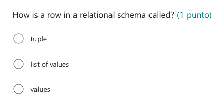
Course quiz 1 · 2026 · Question 2 in this collectionWhich of the following SQL statements is correct and meaningful considering the following tables? (ignore links if they appear in the presentation of…
View original wording and layout
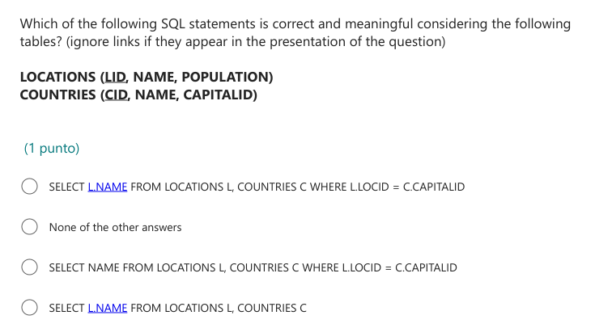
Course quiz 1 · 2026 · Question 3 in this collectionWhich of the following is a key difference between data and information (1 punto)
View original wording and layout
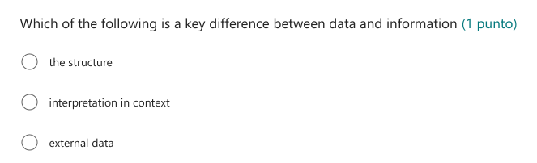
Course quiz 1 · 2026 · Question 4 in this collectionWhat type of data do OLTP systems primarily process? (1 punto)
View original wording and layout
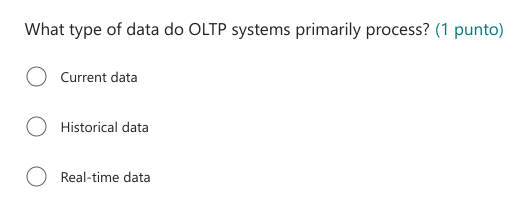
Course quiz 1 · 2026 · Question 5 in this collectionComplete the following SQL statement in a DB with the following tables, to retrieve the names of the capitals with more than 1,000,000 inhabitants or…
View original wording and layout
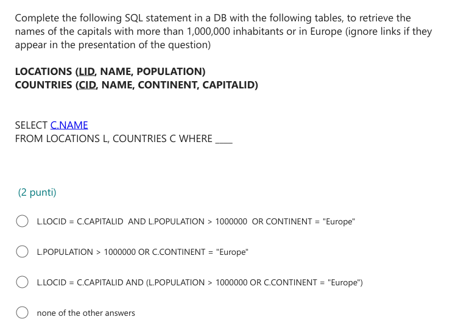
Course quiz 1 · 2026 · Question 6 in this collectionWhat is a key characteristic of OLAP systems? (1 punto)
View original wording and layout
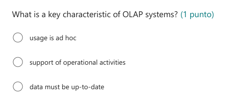
Course quiz 1 · 2026 · Question 7 in this collectionWhat is the purpose of a relational schema? (1 punto)
View original wording and layout
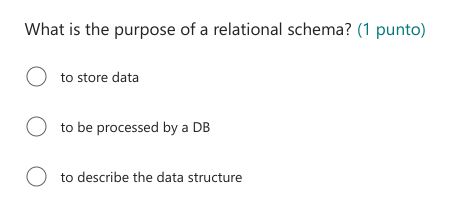
Course quiz 1 · 2026 · Question 8 in this collectionWhich statement do you use to change a value in a table? (1 punto)
View original wording and layout
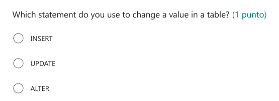
Course quiz 1 · 2026 · Question 9 in this collectionWhich statement is not true about DBMSs? (1 punto)
View original wording and layout
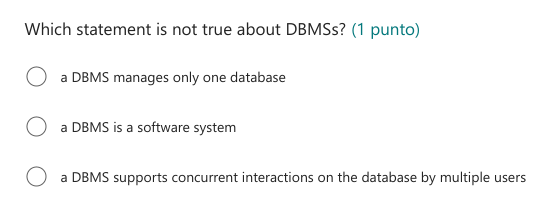
Course quiz 1 · 2026 · Question 10 in this collectionWhich attribute can be a foreign key in following tables? (ignore links if they appear in the presentation of the question)
View original wording and layout
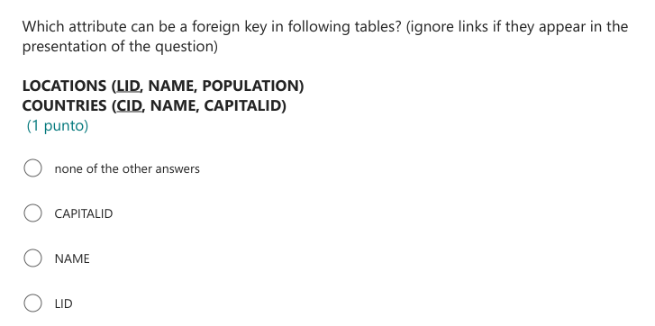
Course quiz 1 · 2026 · Question 11 in this collectionIn an OLTP system the operations on data are (1 punto)
View original wording and layout
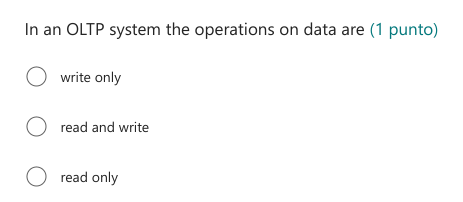
Course quiz 1 · 2026 · Question 12 in this collectionAccording to Moody's laws, which of the following statements is true? (1 punto)
View original wording and layout
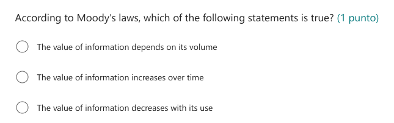
Course quiz 1 · 2026 · Question 13 in this collectionWhich of the following queries is preferable if you want to retrieve the name of the country whose capital is London (ignore links if they appear in…
View original wording and layout
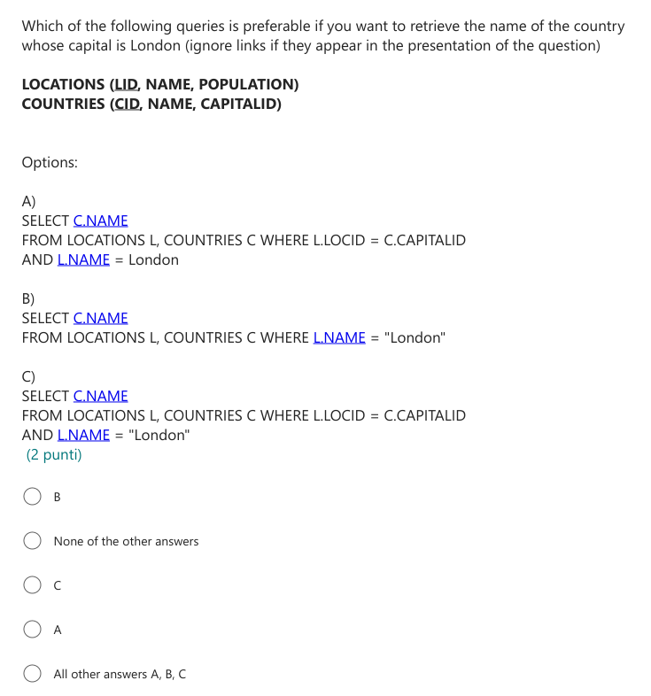
Course quiz 2 · 2026 · Question 1 in this collectionWhich is the result of a+b where a = 'u' and b = 'p'? * (1 punto)
View original wording and layout
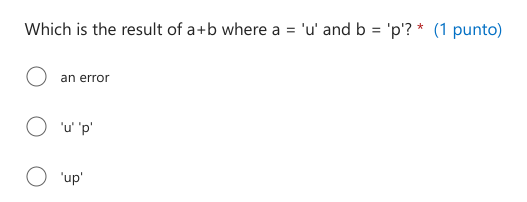
Course quiz 2 · 2026 · Question 2 in this collectionWhat is the effect of the following code executed in a notebook code cell:
View original wording and layout
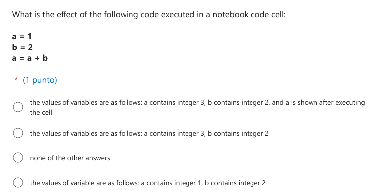
Course quiz 2 · 2026 · Question 3 in this collectionWhat is the difference between the following two statements if executed in a Python notebook code cell, assuming that the value of a is 2.1 at the…
View original wording and layout
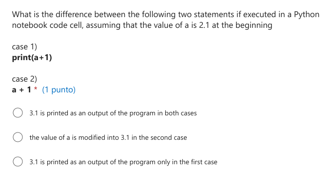
Course quiz 2 · 2026 · Question 4 in this collectionWhich of the following statements insert the values 4 and 5 to set1, defined as follows:
View original wording and layout
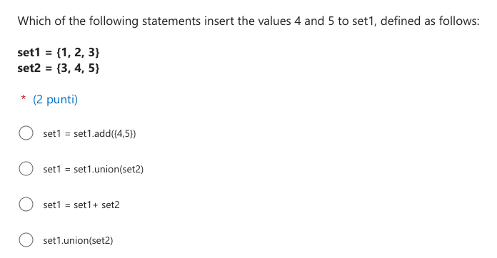
Course quiz 2 · 2026 · Question 5 in this collectionWhat will be the value of y after the execution of this fragment of code:
View original wording and layout
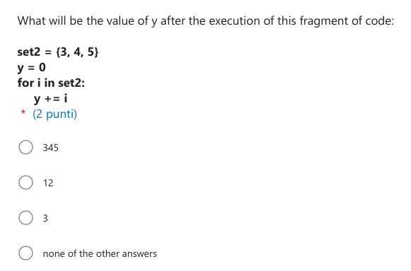
Course quiz 2 · 2026 · Question 6 in this collectionWhat will be the value of a after the execution of this code:
View original wording and layout
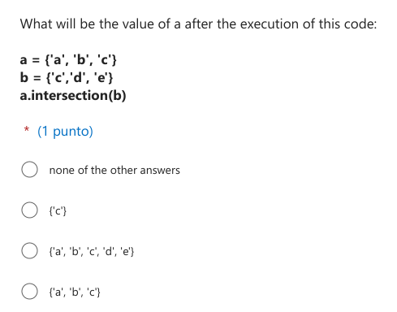
Course quiz 2 · 2026 · Question 7 in this collectionWhat is the result of this division when performed in a code cell:
View original wording and layout
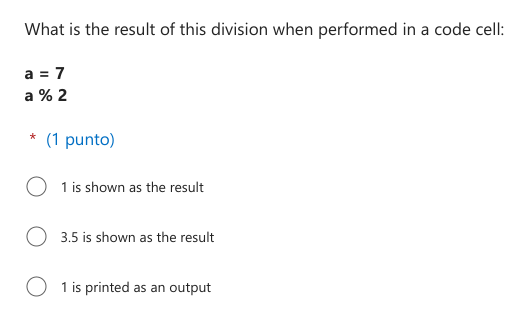
Course quiz 2 · 2026 · Question 8 in this collectionWhich of these data structure cannot contain duplicate values:
View original wording and layout
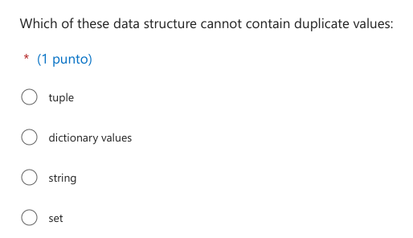
Course quiz 2 · 2026 · Question 9 in this collectionWhat is the output of the execution of the following code?
View original wording and layout
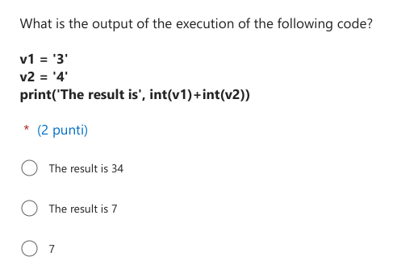
Course quiz 2 · 2026 · Question 10 in this collectionAssuming you create two tables in SQLite as follows:
View original wording and layout
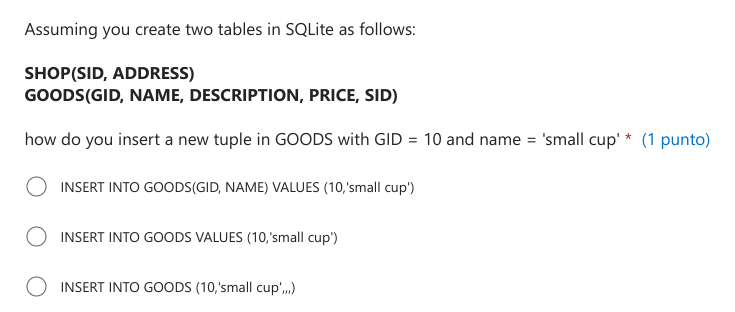
Course quiz 2 · 2026 · Question 11 in this collectionAssuming you create two tables in SQLite defined as follows:
View original wording and layout
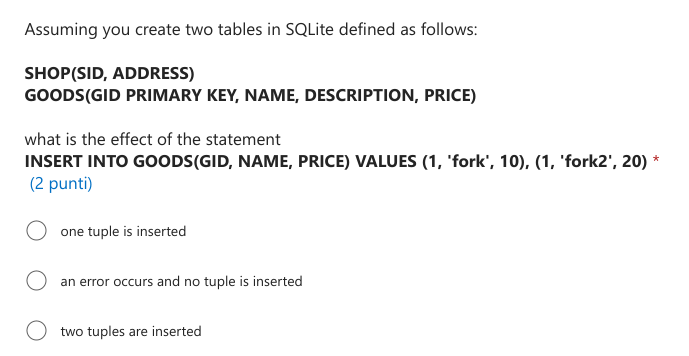
Course quiz 3 · 2026 · Question 2Which of the following SQL statement is preferable to profile the values of the attribute Location in table PERSON(Name, Street, Location, Email)?
View original wording and layout
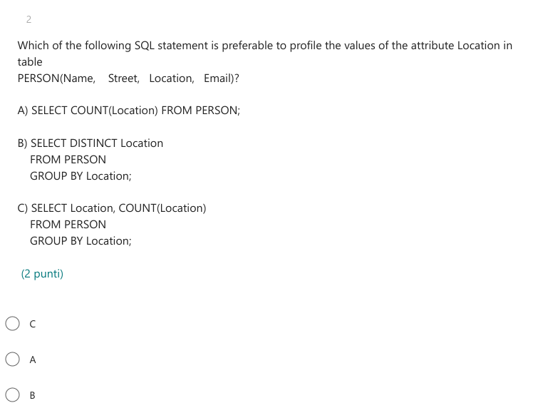
Course quiz 3 · 2026 · Question 3What type of data quality problem do you have if some values in a dataset are not true with respect to the real world? (1 punto)
View original wording and layout
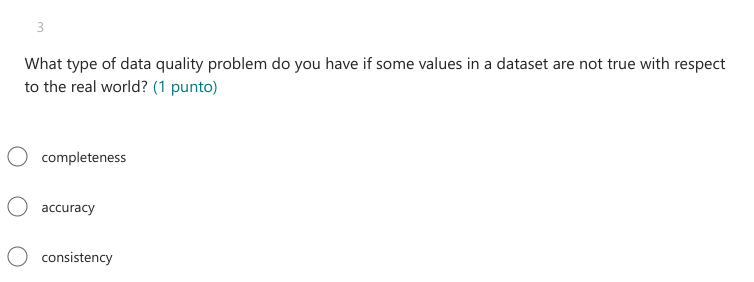
Course quiz 3 · 2026 · Question 4Given the following Pandas Series:
View original wording and layout
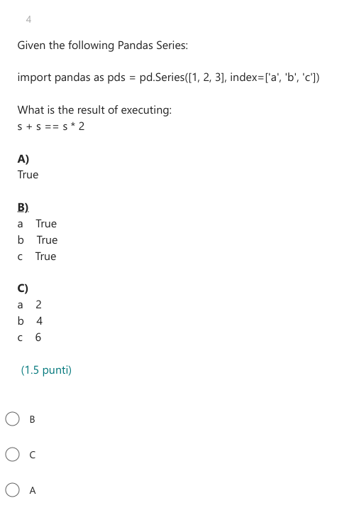
Course quiz 3 · 2026 · Question 5In pandas, a DataFrame can be created as a dictionary of Series:
View original wording and layout
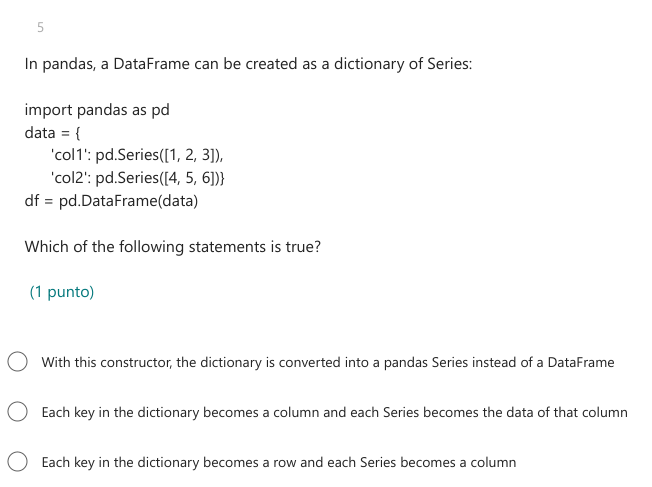
Course quiz 3 · 2026 · Question 6Which of the following you would usually consider in data profiling? (1 punto)
View original wording and layout
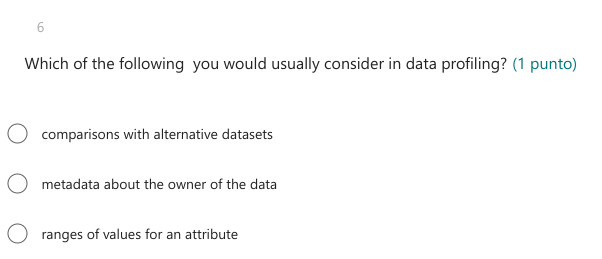
Course quiz 3 · 2026 · Question 7What is the number of tuples in the result of the following query on the table
Original table or code
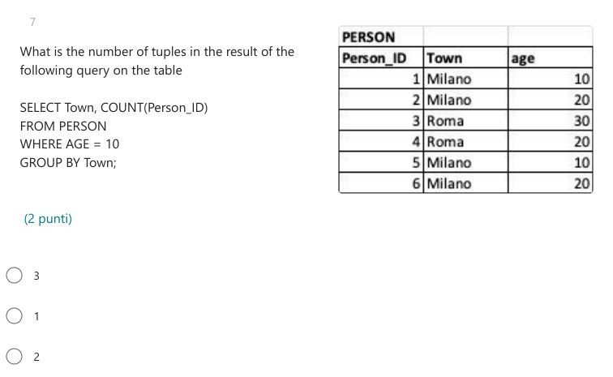
Course quiz 3 · 2026 · Question 8Consider the following Python code. What is the value of s at the end of the execution?
Original table or code
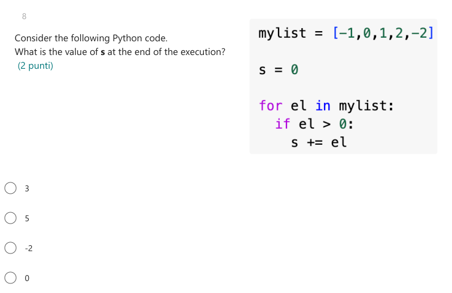
Course quiz 3 · 2026 · Question 9Which are the data quality dimensions which are relevant for this table?
Original table or code
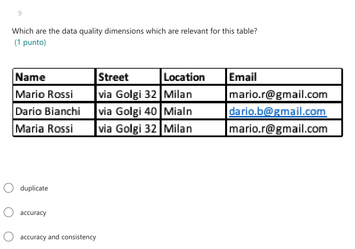
Course quiz 3 · 2026 · Question 10Given the following Pandas Series:
View original wording and layout
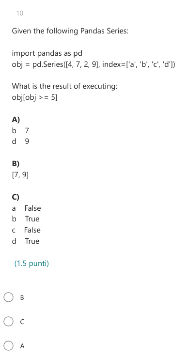
Course quiz 3 · 2026 · Question 11Which of the following statements best describes the difference between Data Strategy and Data Governance? (1 punto)
View original wording and layout
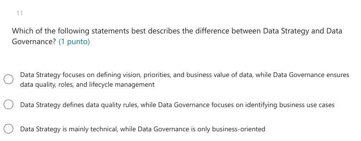
Course quiz 3 · 2026 · Question 12Consider the following Python code.
Original table or code
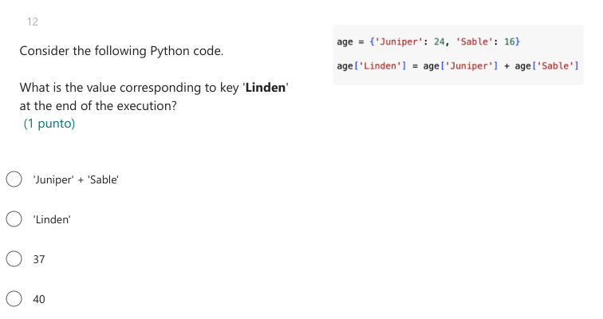
Course quiz 4 · 2026 · Question 2How can localities be uniquely identified? (1 punto)
View original wording and layout
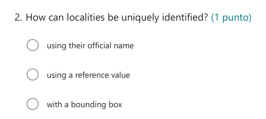
Course quiz 4 · 2026 · Question 3Given the following Pandas DataFrame:
View original wording and layout
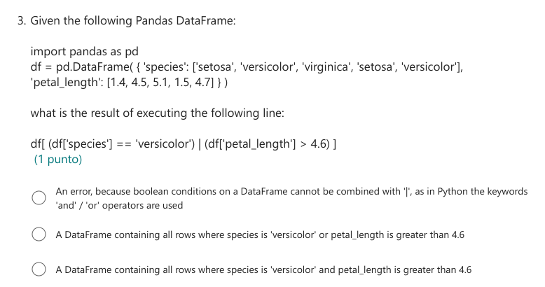
Course quiz 4 · 2026 · Question 4Which role is primarily responsible for ensuring that the project meets its objectives? *
View original wording and layout
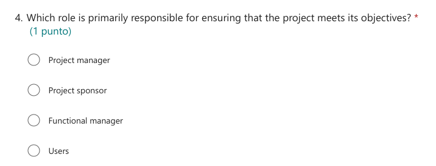
Course quiz 4 · 2026 · Question 5What is the activity perfoemed by a Beacon? (1 punto)
View original wording and layout
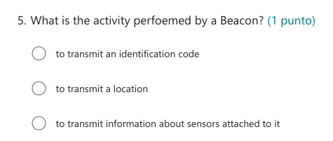
Course quiz 4 · 2026 · Question 6Which of the following is an ISO 8601 UTC time? (1 punto)
View original wording and layout
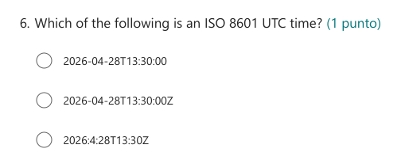
Course quiz 4 · 2026 · Question 7What does the RACI matrix stand for in project management? * (1 punto)
View original wording and layout
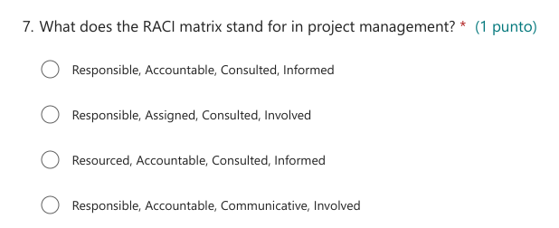
Course quiz 4 · 2026 · Question 8What an Alpha-2 code in ISO 3166? (1 punto)
View original wording and layout
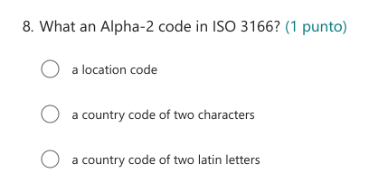
Course quiz 4 · 2026 · Question 9After executing the following code:
View original wording and layout
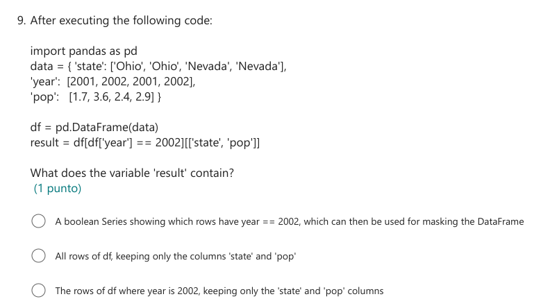
Course quiz 4 · 2026 · Question 10Why is magnetic induction needed in a passive RFID? (1 punto)
View original wording and layout
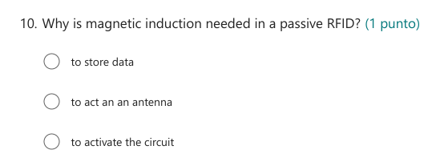
Course quiz 4 · 2026 · Question 11Given the following json code in file persons.json: [ { "firstName": "John", "lastName": "Smith", "city": "Milan", "phoneNumber": "646 555-4567" }, {…
View original wording and layout
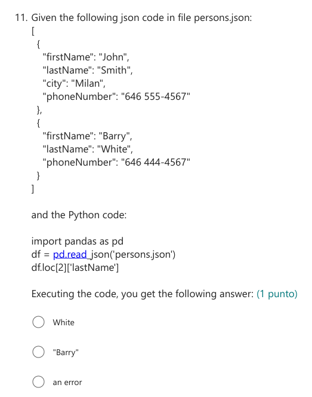
Course quiz 4 · 2026 · Question 12According to Mendelow’s Stakeholder Matrix, stakeholders with high power and low interest should be: * (1 punto)
View original wording and layout
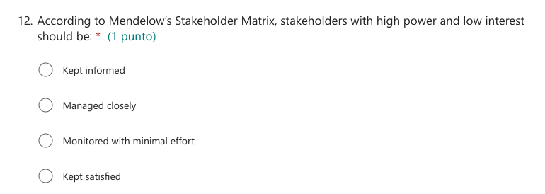
Course quiz 4 · 2026 · Question 13What is the primary objective of project management? (1 punto)
View original wording and layout
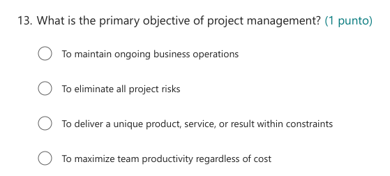
Course quiz 4 · 2026 · Question 14In geoJSON (1 punto)
View original wording and layout
Course quiz 4 · 2026 · Question 15What is the primary focus of the Work Breakdown Structure (WBS)? * (1 punto)
View original wording and layout
Course quiz 4 · 2026 · Question 16Localization of objects using RFID technology (1 punto)
View original wording and layout
Course quiz 5 · 2026 · Question 2How is the hierarchy for a dimension of a data warehouse represented in a relational star model? (1 punto)
View original wording and layout
Course quiz 5 · 2026 · Question 3When a slice operation is performed in SQL (1 punto)
View original wording and layout
Course quiz 5 · 2026 · Question 4Consider the following code:
View original wording and layout
Course quiz 5 · 2026 · Question 5Given the following code:
View original wording and layout
Course quiz 5 · 2026 · Question 6How are metadata provided in the Eurostat database? (1 punto)
View original wording and layout
Course quiz 5 · 2026 · Question 7Which is the main difference between a data lake and a data warehouse (1 punto)
View original wording and layout
Course quiz 5 · 2026 · Question 8Why deduplication is needed in datawarehousing? (1 punto)
View original wording and layout
Course quiz 5 · 2026 · Question 9Consider the following code:
View original wording and layout
Course quiz 5 · 2026 · Question 10What is contained in the staging area in a datawarehouse architecture? (1 punto)
View original wording and layout
Course quiz 5 · 2026 · Question 11A fact in a datawarehouse is
View original wording and layout
Course quiz 5 · 2026 · Question 12In a roll up operation (1 punto)
View original wording and layout
Course quiz 5 · 2026 · Question 13Which of the following is an appropriate level of detail for the finest granularity for time in a statistical database at country level? (1 punto)
View original wording and layout
Course quiz 6 · 2026 · Question 2Consider the following Python code:
View original wording and layout
Course quiz 6 · 2026 · Question 3In traditional IT project management (Waterfall model), when is testing typically conducted? * (1 punto)
View original wording and layout
Course quiz 6 · 2026 · Question 4A digital transformation initiative starts with a clear business objective, but the detailed solution is expected to evolve through user feedback and…
View original wording and layout
Course quiz 6 · 2026 · Question 5A project team identifies that a critical vendor may not deliver an integration component on time. The probability is medium, but the impact would be…
View original wording and layout
Course quiz 6 · 2026 · Question 6Which Agile Manifesto value emphasizes adaptability? * (1 punto)
View original wording and layout
Course quiz 6 · 2026 · Question 7What is the main purpose of iterative and incremental delivery in Agile? * (1 punto)
View original wording and layout
Course quiz 6 · 2026 · Question 8Consider the following Python code:
View original wording and layout
Course quiz 6 · 2026 · Question 9What are the three edges of the "golden triangle" in project management? * (1 punto)
View original wording and layout
Course quiz 6 · 2026 · Question 10Which of the following is NOT one of the ten knowledge areas identified by PMBOK for successful project management? * (1 punto)
View original wording and layout
Course quiz 6 · 2026 · Question 11Consider the following Python code:
View original wording and layout
Course quiz 6 · 2026 · Question 12In Agile Project Management, what is typically fixed compared to Traditional Project Management? * (1 punto)
View original wording and layout
Course quiz 6 · 2026 · Question 13Which role in SCRUM is responsible for ensuring that the team adheres to SCRUM practices and principles? * (1 punto)
View original wording and layout
Course quiz 7 · 2026 · Question 2What is a Public key infrastructure? (1 punto)
View original wording and layout
Course quiz 7 · 2026 · Question 3Can the symmetric encryption mechanism be used for authentication? (1 punto)
View original wording and layout
Course quiz 7 · 2026 · Question 4Are asymmetric keys sufficient to guarantee the authenticity of data? (1 punto)
View original wording and layout
Course quiz 7 · 2026 · Question 5Can a digital signature have legal value? (1 punto)
View original wording and layout
Course quiz 7 · 2026 · Question 6Who cannot perform an attack to an information system? (1 punto)
View original wording and layout
Course quiz 7 · 2026 · Question 7What is service availability? (1 punto)
View original wording and layout
Course quiz 7 · 2026 · Question 8What are privileges in managing registered users in an organization? (1 punto)
View original wording and layout
Course quiz 7 · 2026 · Question 9Which of the following is not a logical threat? (1 punto)
View original wording and layout
Course quiz 7 · 2026 · Question 10What is a distributed denial-of-service attack? (1 punto)
View original wording and layout
Course quiz 7 · 2026 · Question 11What is data spoofing? (1 punto)
View original wording and layout
Course quiz 7 · 2026 · Question 12What is information when considering security (1 punto)
View original wording and layout
Course quiz 7 · 2026 · Question 13How is the signature of a signed document verified? (1 punto)
View original wording and layout
Course quiz 7 · 2026 · Question 14What is the role of a digital certificate (1 punto)
View original wording and layout
Course quiz 7 · 2026 · Question 15Which security property can a hash function guarantee? (1 punto)
View original wording and layout
Course quiz 7 · 2026 · Question 16Which security property is NOT verified with a digital signature? (1 punto)
View original wording and layout
Course quiz 1 · 2025 · Question 1 in this collectionWhat is metadata? (1 punto)
View original wording and layout
Course quiz 1 · 2025 · Question 2 in this collectionWhat is a key characteristic of OLTP systems? (1 punto)
View original wording and layout
Course quiz 1 · 2025 · Question 3 in this collectionWhy the base of the DIKW (Data Information Knowledge Wisdom) pyramid is larger? (1 punto)
View original wording and layout
Course quiz 1 · 2025 · Question 4 in this collectionWhich of the following queries is preferable if you want to retrieve the quantity of the product with code 'P1' in the year 2024 and the stores in…
View original wording and layout
Course quiz 1 · 2025 · Question 5 in this collectionIn an OLTP system the operations on data are (1 punto)
View original wording and layout
Course quiz 1 · 2025 · Question 6 in this collectionHow do you fill in the blank in the following statement to add a column CITY to table SALES (PROD_ID, YEAR, STORE, QUANTITY) ?
View original wording and layout
Course quiz 1 · 2025 · Question 7 in this collectionWhich statement is not true about DBMSs? (1 punto)
View original wording and layout
Course quiz 1 · 2025 · Question 8 in this collectionWhat type of data do OLAP systems primarily process? (1 punto)
View original wording and layout
Course quiz 1 · 2025 · Question 9 in this collectionComplete the following SQL statement in a DB with the following tables, to retrieve the names of products produced in one of the following years: 2023,…
View original wording and layout
Course quiz 1 · 2025 · Question 10 in this collectionAccording to Moody's laws, which of the following statements is true? (1 punto)
View original wording and layout
Course quiz 1 · 2025 · Question 11 in this collectionWhich of the following SQL statements is correct and meaningful considering the following tables?
View original wording and layout
Course quiz 1 · 2025 · Question 12 in this collectionWhich is a foreign key in table SALES?
View original wording and layout
Course quiz 1 · 2025 · Question 13 in this collectionHow is information defined in the context of data? (1 punto)
View original wording and layout
Course quiz 1 · 2024 · Question 3In an OLAP system the operations on data are (1 punto)
View original wording and layout
Course quiz 1 · 2024 · Question 4Which of the following attributes must necessarily have a value in the relation PART(ID, PartDescription, SupplierID) with ID as Primary Key ? (1 punto)
View original wording and layout
Course quiz 1 · 2024 · Question 5Why is data a resource in the organization which is different from other resources? (1 punto)
View original wording and layout
Course quiz 1 · 2024 · Question 6Which of the following assertions is not true? (1 punto)
View original wording and layout
Course quiz 1 · 2024 · Question 7Which of the following SQL statements is correct and meaningful considering the following tables?
View original wording and layout
Course quiz 1 · 2024 · Question 8According to Moody's laws, which of the following statements is false? (1 punto)
View original wording and layout
Course quiz 1 · 2024 · Question 9In the DIKW (Data Information Knowledge Wisdom) pyramid from bottom, to top what increases? (1 punto)
View original wording and layout
Course quiz 1 · 2024 · Question 10Complete the following SQL statement in a DB with the following tables, to retrieve the towns of suppliers providing a part that has "bolt" or "hammer"…
View original wording and layout
Course quiz 1 · 2024 · Question 11Can a primary key be formed by more than one attribute? (1 punto)
View original wording and layout
Course quiz 1 · 2024 · Question 12Which of the following queries is preferable if you want to retrieve the ID and PartDescription of parts provided by the supplier with an ID equal to 1?
View original wording and layout
Course quiz 1 · 2024 · Question 13Which is a good primary key in the following table?
View original wording and layout
About the sources
Prompts and answer choices retain the original wording, including source typos. Line wrapping is adjusted for reading. Original excerpts preserve code indentation, tables and figures. Source copies that repeat the same quiz are included once; questions repeated across exams and the professor’s sample list remain under their original references.
For quizzes without printed question numbers, numbering follows this collection. Question 2 in the supplied 15 February 2023 exam contains only “XXX”, so no question has been reconstructed. Selections visible in original form excerpts are preserved from the source and are not a verified answer key. Topic labels are navigation aids.